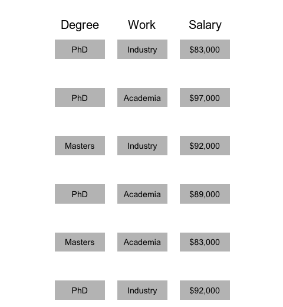
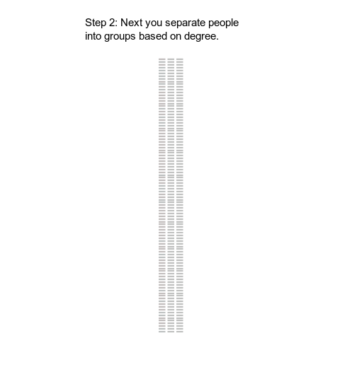
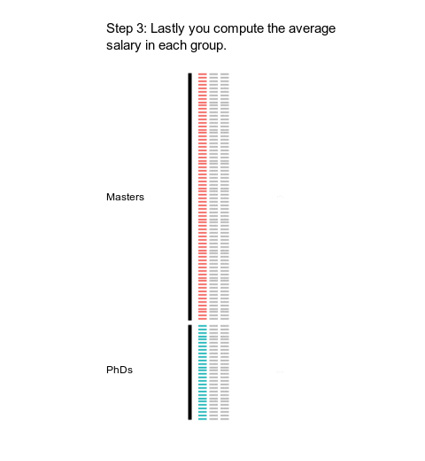
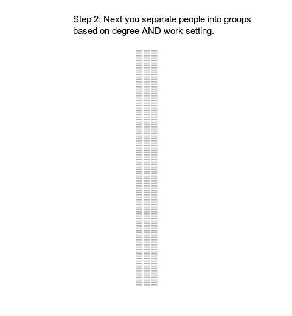
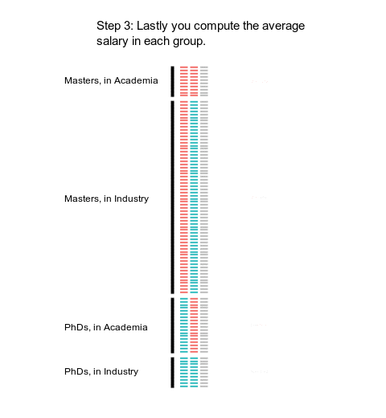

In this task, you will answer some questions about a dataset. This task is part of a research project. We are interested in what you think without the help of external resources. You will be compensated $1.50 for your participation.
Thank you for taking the time to consider volunteering in a Microsoft Corporation research project. This form explains what would happen if you join this research project. Please read it carefully and take as much time as you need. Email the study team to ask about anything that is not clear.
Participation in this study is voluntary and you may withdraw at any time.
Understanding Data Pipelines
Principal Investigator: Dan Goldstein
The purpose of this project is to study how people perceive data.
During this project, you will read some information about worker salaries and you will be shown some related graphs. Then you will be asked a few questions about worker salaries.
Microsoft may document and collect information about your participation by recording your answers to multiple choice and free response questions.
Approximately 100 participants will be involved in this study.
Aside from your Mechanical Turk ID, no personal information will be collected during this study. Your Mechanical Turk ID will not be shared outside of Microsoft Research and the confines of this study without your permission, and will be promptly deleted after compensation has been successfully provided (30 days or less). De-identified data may be used for future research or given to another investigator for future use without additional consent.
Microsoft Research is ultimately responsible for determining the purposes and uses of data collected through this study.
For additional information or concerns about how Microsoft handles your personal information, please see the Microsoft Privacy Statement (https://privacy.microsoft.com/en-us/privacystatement).
Benefits: There are no direct benefits to you that might reasonably be expected as a result of being in this study. The research team expects to learn about human decision making from the results of this research, as well as any public benefit that may come from these research results being shared with the greater scientific community.
Risks: If you are unable to submit a HIT due to technical difficulties on your end there is a risk of loss of payment. To mitigate participants can reach out to the research team for input on resolving any difficulties encountered.
You will receive $1.50 after completing the entire study.
Your data and/or samples may be used to make new products, tests or findings. These may have value and may be developed and owned by Microsoft and/or others. If this happens, there are no plans to pay you.
Should you have any questions concerning this project, or if you are injured as a result of being in this study, please contact us at dgg@microsoft.com
Should you have any questions about your rights as a research subject, please contact Microsoft Research Ethics Program Feedback at MSRStudyfeedback@microsoft.com.
By clicking “I agree” below, you confirm that the study was explained to you, you had a chance to ask questions before beginning the study, and all your questions were answered satisfactorily. By clicking “I agree” below, you voluntarily consent to participate, and you do not give up any legal rights you have as a study participant.
You will be provided a link to download this form. On behalf of Microsoft, we thank you for your contribution and look forward to your research session.
Imagine that you are an analyst working for a think tank. You conducted a salary survey with 100 respondents in June 2018.
Each respondent worked in either industry (companies) or academia (colleges and universities) at the time of the survey. Also, each respondent had either a master’s or a PhD degree.
Each of the 100 respondents reported:
You analyzed the answers from all 100 respondents in two ways. You created a series of animations to show each step in your analysis.
You analyzed the answers from all 100 respondents in two ways. You created an outline for each step in your analysis, see below.
First, you looked at how work settings alone relate to salaries for all 100 participants (Step 1-3 below).
Step 1: You grouped respondents by degree type (master's or PhD).
Step 2: You looked at the salaries of respondents in each group.
Step 3: You computed the average salary in each group.
Then, you looked at how work settings AND degree relate to salaries for all 100 participants (Step 1-3 below).
Step 1: You grouped respondents by degree type (master's or PhD) and work setting (industry or academia).
Step 2: You looked at the salaries of respondents in each group.
Step 3: You computed the average salary in each group.
Each row shows the average salary for each group.
Which of the following could explain how both statements are true? This is the main point of this experiment. Please take it seriously.
Imagine in the future seeing tables like these in an online newspaper: